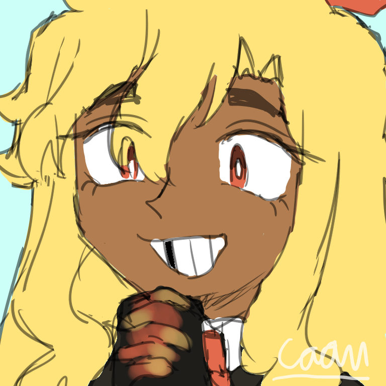
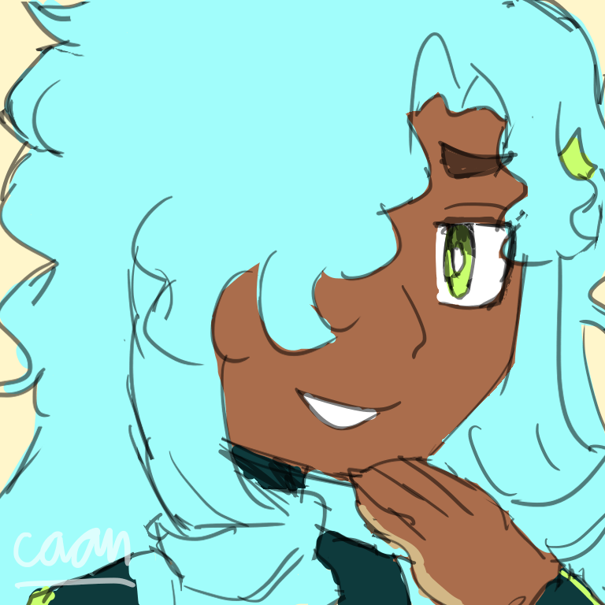
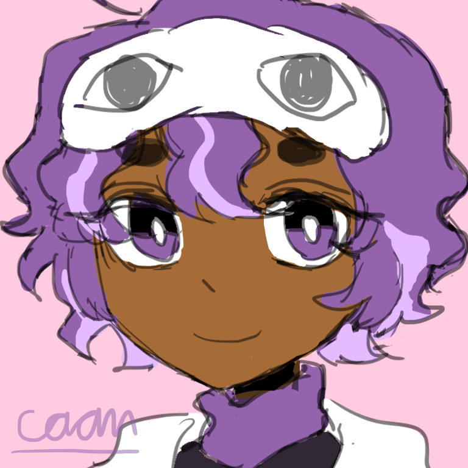
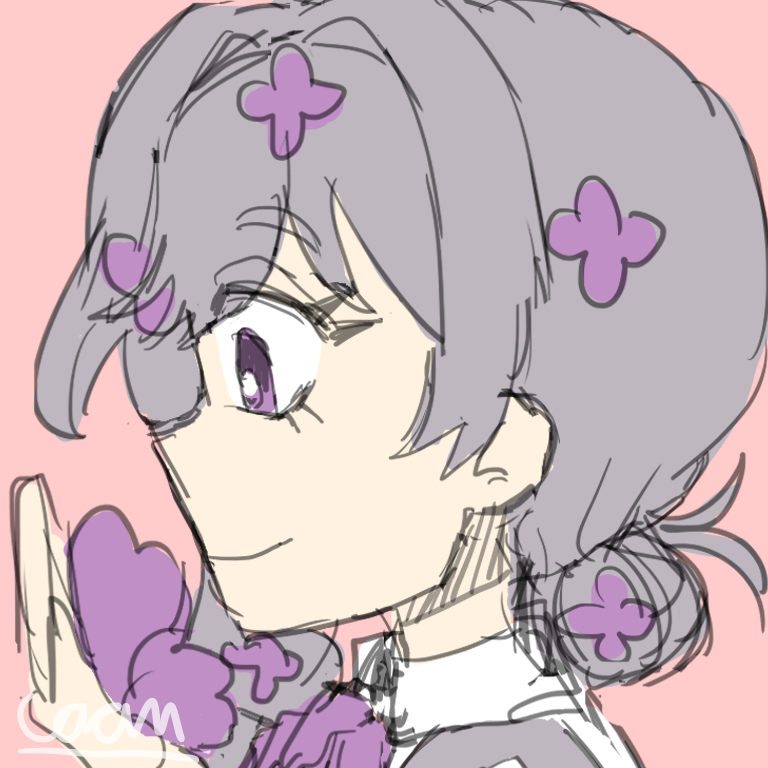
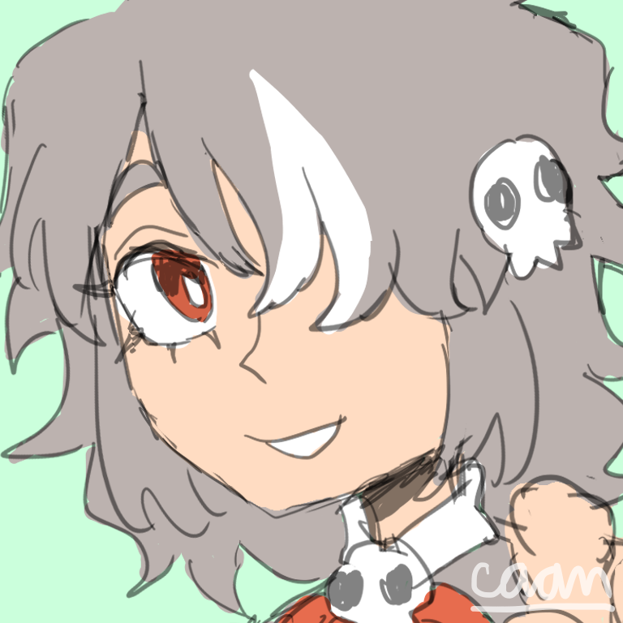
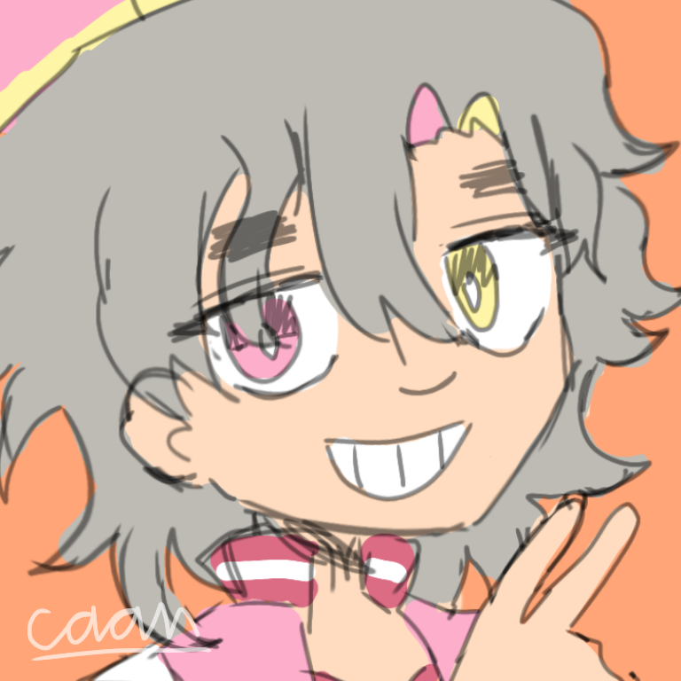
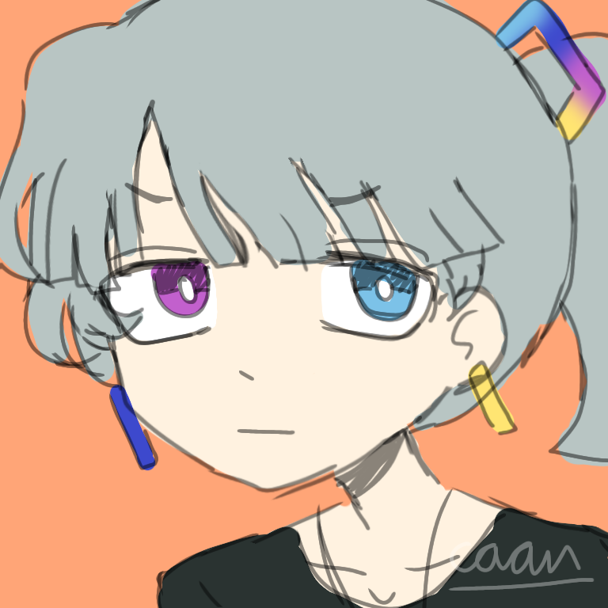
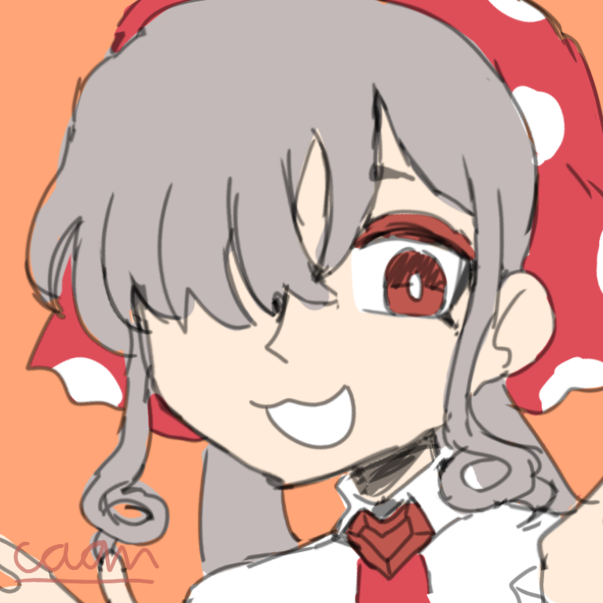

Hydrogen
NAME Huaqing Li
AGE 20s
GENDER female (she/they)
SPECIES element
"I mayhaps just forgot about what I was going to do with this glass of water."
The main character! One of the creators of The Universe. She's energetic and always excited for new things in her life, sometimes she gets so excited that she accidentally destroys the objects around her. She is observant and curious about her surroundings, wanting to know more about why her friends and other Liverblueians behave in such way. Lastly and unfortunately, she's forgetful.
Helium
NAME Hetansh Sharma
AGE 30s
GENDER male (he/him)
SPECIES element
"Remember, forcing things out only makes things worse."
The other creator of The Universe. Wise balloon guy with a sunny smile. Barely interacts with most people outside his friend group unless necessary, most of the time he spends time meditating in his room, and he avoids dramas at all cost. His philosophy may be weird-sounding to those who do not get it.

Lithium
NAME Lina Petraytė
AGE 30s
GENDER female (she/her)
SPECIES element
"Who broke my battery!? ANSWER NOW!"
A short-tempered battery store owner. She is straightforward and brutally honest, there's no wishy-washy business with her. Besides that, she's very generous, she almost has no sense of belonging, maybe she even wants to get rid of her belongings whenever possible, so she often gives out free stuff, especially batteries. She's that one mom friend that is good at comforting to those who are genuinely kind.

Beryllium
NAME Beiming Zhang
AGE 20s
GENDER male (he/they)
SPECIES element
"Why would you hate a cute boy like me? :3"
Stingy boss of an aerospace company. Self-proclaimed "cutest boy" in the district, he acts all cutesy especially if he's trying to get what he wants but fails miserably anyways, beneath his sweet layer he's actually a rude and selfish guy who is full of himself, and pretty much everyone knows that.
Boron
NAME Beatriz Ramírez
AGE 20s
GENDER female (she/her)
SPECIES element
"We're going to play tennis? Oh, yeah!"
Easygoing gardener that looks like she never faced any huge problems in her life when in reality she's just very good at enduring! And she is a pretty fun and excitable person to be with. She is all good except for her clean freak behaviour that can be a bit annoying sometimes. She likes boring sports like tennis and golf.
Carbon
NAME Chetan Duvvuri
AGE 20s
GENDER male (he/him)
SPECIES element
"Let's see what idea I can have... oh, I know! A house-shaped compound!"
The other main character. You can say he is the father of life since he created life on Earth and maybe some other planets? He's creative and has a lot of ideas from the sensical ones to the absurd ones, his most popular work is benzene, a hexagon-shaped compound since he loves hexagons. He is a friendly guy, a lot of people love him.
Nitrogen
NAME Nadia Delisha
AGE 20s
GENDER female (she/her)
SPECIES element
"The ice cubes are in? Cool."
The likeable cool girl that does cool things such as cryogenics, car racing, skiing, you name it and... farming. A bit airheaded but genuinely kind and helpful. Very chill, takes things really slowly that sometimes people think she might take serious things unseriously when she does take them seriously.
Oxygen
NAME Oxford Virtanen
AGE 20s
GENDER male (he/they)
SPECIES element
"I thought carbons could float?"
An absolute airhead. He's talkative but talking with him would cost your brain cells unless you have a high level of patience, he says and asks the dumbest sentences ever in a genuine way. Not only that, the fact that he's easily distracted makes it harder to actually have a conversation with him. And he is really clumsy so no matter how hard you try to guard him he'll always somehow trip over air and whatnot.
Fluorine
NAME Floriano Acosta
AGE 30s
GENDER male (he/him)
SPECIES element
"One thousand reasons why you should brush your teeth! Number one..."
A very talkative dentist that talks real fast, it's impossible for him to shut up especially if he's talking about his interest; teeth and dentistry. He self-proclaims everyone as his friend, yet he likes to force them to do his thing, pick fights and cause problems with them over the slightest inconvenience since he's overreactive. Speaking of overreactivity, he reacts strongly to both compliments and insults that are intentional or not.
Neon
NAME Nero Yang
AGE 20s
GENDER non-binary (they/them)
SPECIES element
"Party in my room woo!"
A young person aspiring to be as noble as their friends. They seem like a fun person to hang out with, being a funky party person, except they're an introvert that party all by themselves in their home since they can't stand crowds or interact with more than two people. A bit silly and harmlessly prank their friends sometimes.
Sodium
NAME Novak Đorđević
AGE 20s
GENDER male (he/him)
SPECIES element
"Quit touching my kitchenware!"
Salty chef that only cooks salty food because apparently it's the best flavor according to himself, his cooking tastes the best though, as long as it's not anything other than salty food, otherwise it'll be a nightmare fuel. While he may look angry and intimidating most of the time, he can be soft and chill around his beloved ones, such as his friends or wife.
Magnesium
NAME Maggie Reyes
AGE 20s
GENDER female (she/they)
SPECIES element
"Green is for vegetables."
Friendly and kind unironic vegetable lover that loves the color green, she is really enthusiastic in living a healthy green life, and you'll never understand why she loves vegetables so much. She often goes travelling in her spare time, usually with a car since she loves car rides. She also loves photography so she always bring her camera with her whenever she travels.
Aluminium
NAME Aluna Molefe
AGE 20s
GENDER non-binary (they/them)
SPECIES element
"I see a turn! Drifting time!"
Aluna is a big fan of vehicles and is able to drive most of them, they're the best at cars, airplanes, and trains though. They can also just straight up run with their feet if not using vehicles, because they're fast and light! They're a really chill and unserious person, their lifestyle is literally just having no rules and freestyling the entire time. Sort of a risk taker when doing vehicle tricks, it's scary but they'll always be safe.
Silicon
NAME Silvestre Figueroa
AGE 20s
GENDER male (he/they)
SPECIES element
"I'm not gonna waste time on dishes, I'm leaving that to my robot."
Silly owner of the technology centre in the district. Highly intelligent and has the ability to spot the smallest details due to him getting used to coding and programming, except he's pretty lazy, he solves everything with technology whenever possible. He really likes rocks and sands, the beach is his usual place for him to travel when he's on break. He's also kind of socially awkward when not on-screen.

Phosphorus
NAME Pingli Chen
AGE 20s
GENDER female (she/her)
SPECIES element
"Do that ONE MORE TIME and I'm gonna SET this place on FIRE."
It's dangerous to be around her as she has the urge to set things on fire with the matches in her pocket when she's annoyed, too bad it's very easy to piss her off and you'll never know what will pisses her off. She is aware and doesn't really like the fact that she gets mad easily because it causes her to hurt her friends unintentionally. She's a pretty caring person actually, it's just that she can't control her anger that well, but she's trying.
Sulfur
NAME Salma Vasquez
AGE 20s
GENDER female (she/her)
SPECIES element
"Go cry about it."
Troublesome provocative stinky girl, especially to the metals. Her unfiltered words and actions make you get on your nerves, and if you try to revenge her, she will just double it up and make it worse, so the best option is ignoring her after you get pranked. Genuinely a good person to her friends, will help her friends during serious situations, she just picks on them because she thinks it's funny.
Chlorine
NAME Cloris Ahluwalia
AGE 20s
GENDER female (she/her)
SPECIES element
"Yeah, your paragraph is definitely so on to the point that everyone fell asleep."
A swimmer that is obsessed with the clean, her pool must be clean all the time. Talkative but really sarcastic and mean, she judges others a lot and doesn't think about how her words can hurt others, hence why she gets into unnecessary fights with the others pretty often. But somehow she's not like this when she's with Novak, she just cooks together with him most of the time, it's pretty confusing.
Argon
NAME Arlo Ramos
AGE 30s
GENDER male (he/him)
SPECIES element
"Zzz..."
Lazy guy with no clear personality since he sleeps most of the time, well I guess he's a bit protective and wise according to the other noble gases, he specifically protects the metals when he's awake from the hands of Oxford and any other oxidizers, he doesn't have beef with the nonmetals nor he is on the metals' side, but it is for the peace of both sides.
Potassium
NAME Kyunghwa Jeong
AGE 30s
GENDER female (she/her)
SPECIES element
"The world is full of bananas!"
Naive, silly-looking gardener, she looks dumb but is actually pretty smart. She seems to be pretty chill compared to her groupmates, maybe because having gardening as a hobby helps with it. She always smells nice because she likes soaps. Even though she's silly most of the time, she can get mad actually, if you decided to mess with her of course, most of the time it's Talay that does that, so she hates him to bits.
Calcium
NAME Calantha Eftimova
AGE 20s
GENDER female (she/her)
SPECIES element
"Need help with something buddy?"
A sporty person that is helpful and cares about her friends. Obedient towards available rules and convinces other people to do the same, pretty sure most don't mind but for toxic elements it's highly annoying. She also sculpts and does architecture stuff at other times. And you wouldn't expect someone physically strong to be good at logical field but she is somehow good at math.
Scandium
NAME Scanlon Dyrssen
AGE 30s
GENDER male (he/him)
SPECIES element
"Two more homeruns and I promise I'll get back to work."
An overall great baseballer that is cool but the thing is that he can't prioritize actual priorities over his hobbies, baseball and cycling are just so precious to him. He is highly unreliable and he always breaks his promise, the only way to get him back to work is to forcibly pull him back. He doesn't use any vehicles besides bicycle, because one it trains his legs, and two it doesn't cause any pollution.
Titanium
NAME Tabitha Park
AGE 30s
GENDER female (she/her)
SPECIES element
"Work hard and work quick."
A professional aerospace engineer that takes her job seriously, she is known for her speed and toughness among people. She is hardworking and determined, but there are times where she may be too harsh on herself and overworks on her job sometimes, and no one can stop her when she does that. In her spare time she does art, such as making jewellery or just drawing.
Vanadium
NAME Viveca Haugen
AGE 20s
GENDER female (she/her)
SPECIES element
"Everyone deserves to be loved!"
Average young person with the energy of youth, she is pretty beautiful according to other Liverblueians. She is a lovey-dovey engineer that loves everyone and her job very much. She always cherishes for life-lasting positive friendships, romance, and the alike. Despite her looks and usual personality, there's actually this side of her that sounds brutal, she can be a war maniac if there's a war going on.
Chromium
NAME Chronicle Mendoza
AGE 30s
GENDER female (she/her)
SPECIES element
"STOP TALKING AND GET IN THE CAR QUICK OR ELSE I'M GONNA PUNCH YOU!"
Strong and tough car driver in Bridgeon Industrial Area who is mean towards everyone (especially nonmetals) except for Niklaus for absolutely no reason. She is aggressive and likes to threaten to use violence to people if they disagree with her, and she does things whatever she wants so you can't fight her with basic logic, if she hates you she'll always see anything you do as wrong and vice versa.
Manganese
NAME Manuel Oumarou
AGE 20s
GENDER male (he/they)
SPECIES element
"If anything happens to my garden... if anything happens I'd be doomed!"
A gardener that is always anxious, ill, and shaking most of the time so he has Zhesheng as his caretaker. His biggest fear is if anything bad happens to his garden, which led to him overchecking it, and added with his delusions (such as feeling like there's someone in the garden even though there isn't) it doesn't help at all. His other fears is messing up social interactions, so he's the type of guy that is afraid to say no, which makes things awkward sometimes. His illness is so bad that he can't even focus on doing tasks properly.
Iron
NAME Febri Nurdiantoro
AGE 20s
GENDER male (he/him)
SPECIES element
"I, Febri, as the greatest warrior in the district, will solve this easily!"
Dumb overconfident warrior. Claims himself as knowledgeable, can be trusted, and can solve any problems but then proceeds to scratch his head when someone tells him to solve the easiest problems. Also claims himself as fearless but runs away at a comically high speed when he encounters his fears. He envies Auden's wealth so he made a pact with two demons to annoy his family while also ending up sticking together as a trio.
Cobalt
NAME Corbin Mahlangu
AGE 20s
GENDER male (he/him)
SPECIES element
"Blue best color, end of discussion."
He is one of the two demons hired by Febri, his assigned quest is to annoy Agatha. He is generally just a chill artist who likes the color blue that is pretty fun to be around with. You can tell him to do anything as long as you give him treats, his favourite treats are money and milk if you ask, and don't ever mistreat him, you wouldn't want to see what he could possibly do.
Nickel
NAME Niklaus Hagelstein
AGE 20s
GENDER male (he/him)
SPECIES element
"Hmmm what to do to Cubert today?"
The other demon hired by Febri that likes to annoy coppers, coincidentally his assigned quest to to annoy Cubert so it's a win for him. He's quite a skilled prankster, and unlike Salma, his pranks aren't concerning. He really likes collecting coins, he has a whole warehouse of coins and he has a favorite coin which he brings to anywhere he goes. Besides the pact business and prankish nature, he's a genuinely good person to be friends with since he's surprisingly understanding and easy to communicate with.
Copper
NAME Cubert Gueye
AGE 20s
GENDER male (he/him)
SPECIES element
"Oh Lord Calc, please let me have a peaceful day for once."
Talented electrician that contributed a major role into the electronics in the district, which means he may collaborate with the other tech-savvy elements often, especially Sil. His sister who is a better conductor could replace him easily, but she is not interested in these wiring works so he has a big chance to not be miserable for once. He's miserable because there are multiple people that are always on his way, the people in question are a coin fan, a snob, and his sister.
Zinc
NAME Zhesheng Liu
AGE 20s
GENDER non-binary (they/them)
SPECIES element
"You're not allowed to lay your hand on my friends."
Just a regular person that maintains the health of themself or others, so maybe they can be considered a semi-doctor. They're caring and protective, always checking on their friends to make sure they're all doing fine, sometimes they're really selfless about it and they can sacrifice themselves without hesitation when their friends are under threat.

Gallium
NAME Gabi Wang
AGE 20s
GENDER non-binary (they/them)
SPECIES element
"S-sorry! I didn’t mean to!"
Gabi is an LED maker that works at the district's tech centre. They are quick to adapt and is always ready for team work and any challenges they might face, however their embrittling nature can get in the way, but worry not since their acquaintances accept them and found a way to sort this out by telling them to keep their distance a bit for everyone's convenience including themself.

Germanium
NAME Gerald Lehmann
AGE 30s
GENDER male (he/him)
SPECIES element
"Sir, I'll fix it right now."
Gerald is a timid guy that works at the district's tech centre, he works as Sil's assistant and as the support programmer. He is like Silvestre, kind of awkward, does programming and other technology things, except his skills are not as great as Sil but can be considered pretty great. He tends to make mistakes by accident when Sil gives him a task but that's alright. He is very scared of Asa because he bothers him a lot.
Arsenic
NAME Asadharan Singh
AGE 30s
GENDER male (he/him)
SPECIES element
"Damn, loser, why are you upset over some words?"
The number one evil guy in the district, or at least what himself claims to be. He is the leader of the heavy metals, which is a group that consists of evil people like him, ironically enough he is a metalloid. He is fully aware that his actions cause harm but he doesn't care, he likes to piss people off, he enjoys seeing their “pathetic” reactions. He also takes advantage of desperate people by promising them to grant their wishes (lie). He commits crimes daily, slips off sensitive topics as “jokes”, crosses boundaries, and more.
Selenium
NAME Selena Purnama
AGE 12
GENDER female (she/her)
SPECIES element
"Hoo hoo! I am the greatest villain of all time!"
The mimic master, she mimics how people act as a parody, especially towards Asa, due to this he really hates her. Or maybe her mimicry ability can be used for theatre purposes too, she'd be a good actor. Her mimic ability is inherited from her mother, Teresa, and her mimic ability ended up exceeding those of her mother's due to her practising it consistently. Besides that, she likes to keep her hair hygiene and she can copy pictures by drawing.
Bromine
NAME Brigido Rodríguez
AGE 30s
GENDER male (he/him)
SPECIES element
"What do you mean cockroaches have my colors? Chetan, I'm copyrighting you, this is unacceptable!"
He is one of the actors in the district. Being a halogen makes him overreactive already, combined with him being an actor, and you get the ultimate overdramatic. He will exaggerate everything, even small problems, that sometimes you can't even tell if he's acting or not. Like the other halogens he is a clean freak and he REALLY hates bugs. Luckily he sleeps often so the chaos is reduced.

Krypton
NAME Krystal Quispe
AGE 30s
GENDER female (she/her)
SPECIES element
"Silence is blissful isn't it?"
A ghostly photographer with the ability to make herself invisible, a cool ability for paparazzi maybe. She is gentle, calm, and very quiet that she tends to surprise people when she appears, even without using her invisibility. She may look very mysterious to anyone outside the noble gas group since she is quiet by nature and being a noble gas means she's introverted.

Rubidium
NAME Rubena Hong
AGE 20s
GENDER female (she/her)
SPECIES element
"Why is it taking so long!?"
Rubena is someone who works together with Cesca in terms of atomic clocks, while she may not be as precise as her, Cesca still appreciates her help. She is very impatient and can't control her temper that well, so you might see her anger exploding around pretty often, and Lina is having a pretty hard time trying to calm her down.

Strontium
NAME Saoirse Campbell
AGE 20s
GENDER female (she/her)
SPECIES element
"Today the oil industry has found a big chunk of oil source!"
Saoirse is one of the news reporters in the district. She is a very sparky and sweet person that tries to push away negativity, so she brings out good news or shows about positivity, despite positivity being less "interesting". You wouldn't expect someone this sweet to be best friends with Rubena who is an angry mess, but it works.

Yttrium
NAME Yvonne Ekberg
AGE 20s
GENDER female (she/they)
SPECIES element
"I'm going to let the entire district know about your rottenness."
Yvonne is one of the news reporters in the district. She is an irritable individual, so she tends to share chaotic news to let her anger out or for name dropping the bad guys, her co-worker Saoirse is definitely not a fan of this, but at least Yvonne targets bad people only. She is more close to the lanthanides rather than the transition metals.

Zirconium
NAME Zahara Oliveira
AGE 30s
GENDER female (she/her)
SPECIES element
"Yvonne, you are so bad at handling your irritability."
Zahara is a jeweller in Bridgeon Industrial Area. She is a stoic person, she does not complain no matter how hard life gets, and she is sharp, as in intelligent, straightforward, and also as in having heart-stabbing words. Her words are critical and honest, she however doesn't have any intent to hurt people, she just lets the words in her head out without softening it first.

Niobium
NAME Nibiru Sánchez
AGE 30s
GENDER female (she/they)
SPECIES element
"NOOOO why did I do that!?"
A child that is interested in jewellery and aspires to be a pilot like her dad used to be. As a child people probably have done a lot of stupid things and Nibiru isn't the exception, she tends to impulsively boasts herself to the point where she belittles others, and after that she cries because she regrets it, this explains why she cries a lot.

Molybdenum
NAME Morgan Sitompul
AGE 15
GENDER non-binary (they/them)
SPECIES element
"Cauliflower! Cauliflower!"
Morgan is a hardworking engineer in the district and they are one of Febri’s good friends. They are sociable and easy to be friends with as long as you share something in common with them, if you’re the polar opposite of them well you might have no chance since they’re stubborn. They develop this stubborn personality to avoid being convinced by their behated sibling Peabo to do sketchy things and whatnot.

Technetium
NAME Tachiko Hanazawa
AGE 16
GENDER female (she/her)
SPECIES element
"I hope anyone, whoever and wherever they are, never suffers from unfairness anymore."
Tachiko was born in a rhenium family, being a radioactive which is deemed as "lacking" among most elements, her family wanted to "cure" her radioactivity but she does not like that, she doesn't like her identity being erased, so she mostly escapes to her friend's house. She will never stop questioning why RAs are so hated despite being pretty much a normal element-being until it is completely solved, it just doesn't make any sense for her. And by radios and nonmetals being in the same boat, she also feels bad for them. So with all of these experiences, she is very ambitious to achieve equality for radios and nonmetals, she will not hesitate to do violence or sacrifice herself if it means achieving equality.

Ruthenium
NAME Ruslana Agapova
AGE 20s
GENDER female (she/her)
SPECIES element
"Ok."
Ruslana is one of the noble metals and a writer who mainly writes about articles which look serious like she is. She barely shows any expressions and she's the kind of person that doesn't want to do that many unnecessary things and prefers to focus on whatever she's on. She wouldn't hesitate to ignore people if they're being too much of a distraction, she's only here for serious business.

Rhodium
NAME Rhiannon Márquez
AGE 20s
GENDER male (he/him)
SPECIES element
"Would you like to sit with me on this elegant fountain?"
Rhiannon is one of the noble metals, he is pretty smart in general but awfully stupid in romantic life. He is the second most handsome guy in the district that is full of blinding sparkles. He falls in love very easily, sometimes it makes you wonder why a glamorous guy like him would be romantically interested in a mid or even horrendous person personality-wise, he really needs to be stopped really hard sometimes because his basic logic just cannot work sometimes, his main love interest is Ruslana though. When not doing anything romantic he does jewellery and gardening roses.

Palladium
NAME Padgett Trần
AGE 16
GENDER non-binary (they/them)
SPECIES element
"The best way of getting out from this problem is-"
Padgett is Plautilla's personal strategist and is one of the noble metals. They are wise and analytical, always having the best and the most effective strategy for every problem. They are meticulous and make sure every detail they have gathered can get into use in the strategies they make. Does Plautilla care? Nope, she ended up thinking her poorly thought-out strategies are better.

Silver
NAME Agatha Gueye
AGE 20s
GENDER female (she/her
SPECIES element
"I'm the prettiest woman in the district."
She is a noble metal who dabbles in film-making so she may be dramatic, or maybe very dramatic even, she's like Brigido but better. You can say she loves herself and she feels like she's the princess of the district, so she thinks she deserves a lot of positive attention and cares a lot about her looks, she gotta make sure she looks pretty and all-good in front of everyone.

Cadmium
NAME Cadron Galanis
AGE 20s
GENDER non-binary (they/them)
SPECIES element
"If I'm not happy then you shouldn't be allowed to be happy too."
One of the members of the heavy metals. An aggressive artist that will trash on you if they see you getting good things happening in your life, especially for being "effortless", mostly just projecting their own jealousy as a result of getting constantly bullied somewhere in the past for... being kind as a toxic element, so they gave up on being kind. Nickel's one of the people who is nice to them despite Cadmium's awful attitude, because he knows Cad isn't inherently evil.

Indium
NAME Ihina Chopra
AGE 15
GENDER non-binary (they/she)
SPECIES element
"Wait wait wait I am at the most fun part in the game rn!"
Ihina is one of the people that works at the district's tech centre that contributed to the technology of LCDs and the solar-panels in the district, they are also a decent programmer. One problem is that they're addicted to the games on their phone, and the amount of procrastination they do is just unbelievable, so the only way is forcing them to get back to work.

Tin
NAME Sinta Gondowijoyo
AGE 20s
GENDER female (she/her)
SPECIES element
"This junk can be reused."
A tailor that likes to collect junks in hopes they can be reused, also figurines. She's so frugal that people think she's poor despite being an average person, and even better yet she has a decent knowledge about technology. Sinta is a friendly person that likes to befriend other metals and make her friends get to know eachother.

Antimony
NAME Sybil Hegazi
AGE 30s
GENDER male (he/him)
SPECIES element
"You're under arrest."
A police that has zero passion towards his job but still keeps it going for whatever reasons. And his stance is pretty unclear, sometimes he sides with the good Liverbluians and sometimes he commits crimes with Asa, though he never gets caught since he's skilled at stealthing. The reason for his unclear stance is because deep down he is just scared of being alone so he is a sort of people-pleaser. Some are aware that he is like this, and when they point that out he'll get irritated, he's having a denial about it.
Tellurium
NAME Teresa Basundari
AGE 40s
GENDER female (she/her)
SPECIES element
"What happened yesterday doesn't matter!"
Teresa is as motherly as nature is, and is the mother of Selena, so they share a lot in common, most notable one is the mimicking ability. Teresa is a pretty decent person in general and she forgets bad memories very easily which eases out interpersonal relationships, but sometimes she is stubborn and doesn't want to listen to others' suggestions even though it's very good.

Iodine
NAME Isidora Pérez
AGE 20s
GENDER female (she/they)
SPECIES element
"The medic is on her way!"
A nurse specialising in thyroidology who once was a worse person, now that she has improved from time to time and she got herself to be helpful instead, such as healing and taking care of people. Of course some of her bad side still sticks to her as a naturally toxic element, but compared to Floriano, Cloris, and Brigido she is ten times better.

Xenon
NAME Xedric Domínguez
AGE 30s
GENDER male (he/xe)
SPECIES element
"Oh! This will be good for my photo collection!"
One of the photographers in the district who is also a cinematographer. Pretty extroverted and expressive compared to other noble gases, so he can be seen interacting with elements outside the noble gas on an intermediate amount, this makes him the "weirdo" of the group, in a good way. Besides being the "weird" guy, he is overall a cool guy with a cool appearance, cool flaws, and all that. Aaaaand he sleeps a lot.

Caesium
NAME Cesca Gemechu
AGE 30s
GENDER female (she/her)
SPECIES element
"Don't waste a single second."
Cesca leads the oil industry in the district. She is very strict on time and makes things as accurate as possible, arrive slightly late and you're DOOMED, considering that she has the worst temper among the stable alkali metals, her anger just uncontrollably bursts even though she didn't mean to.

Barium
NAME Barry Cunningham
AGE 30s
GENDER male (he/him)
SPECIES element
"Everyday is always a good day to celebrate."
A gastrointestinal doctor that occasionally works at the oil industry with Cesca. Usually does his normal jobs during the day and activates his parade mode at night. Everyday is a day he celebrates, he doesn't care whether it's a celebratory day or not, what matters the most is that he gets to throw fireworks.